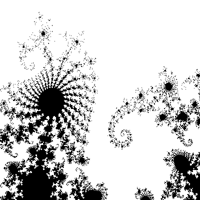
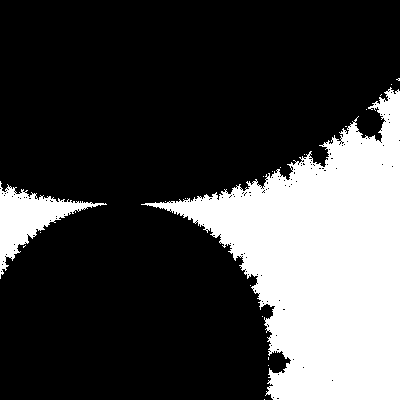
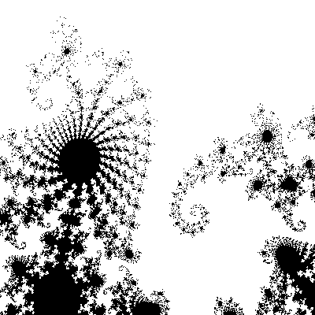

---
layout: default
title: 02-mandelbrot-zoom
---
Main file
{% highlight c++ %}
// Tyler Mumford, 2014
// Mandelbrot set
#include
#include
#include
#include
#include
#include "zoomLevel.h"
int iterate_pt (double complex c);
void createMandelbrotPPM(zoom currentZoom);
int main () {
int i;
for (i = 0; i < NUM_ZOOM_LEVELS; ++i)
{
createMandelbrotPPM(zoomLevels[i]);
}
return 0;
}
// Given a complex number, return whether it is in the Mandelbrot set.
int iterate_pt (double complex c) {
double complex z = 0.0 + 0.0i;
int iterations = 0, k;
for (k=1; k <= (255-64); k++) {
z = z*z + c;
if (sqrt(z*conj(z)) > 50)
break;
else
++iterations;
}
return iterations;
}
// Create an image file.
void createMandelbrotPPM(zoom currentZoom) {
// The cr- and ci- variables define a square in the complex plane.
double crmin = -0.75, crmax = -0.74, cimin = -0.138, cimax = -0.127;
zoomSquare(&crmax, &crmin, &cimax, &cimin, currentZoom);
const int ncols = 200, nrows = 200; // Image dimensions, in pixels.
int Mandelbrot[ncols][nrows];
int x, y;
int color;
char filename[100] = "Mandelbrot ";
strcat(filename, currentZoom.name);
strcat(filename, ".ppm");
double complex c, im = 0.0 + 1.0i;
double dx = (crmax-crmin) / ncols, dy = (cimax-cimin) / nrows; // Step values.
for (y=0; y < nrows; y++) {
for (x=0; x < ncols; x++) {
c = (crmin+x*dx) + (cimin+y*dy)*im;
Mandelbrot[x][y] = iterate_pt(c) + 65; // Save the result in an array.
}
}
FILE *ppmFile = fopen(filename, "w");
// Write the array to a file.
fprintf(ppmFile, "P6\n%i %i\n1\n", ncols, nrows);
for (x=0; xzoomLevel.h
{% highlight c++ %}
// #pragma once
#define NUM_ZOOM_LEVELS 11
struct zoom
{
double multiplier;
char *name;
};
typedef struct zoom zoom;
zoom zoomLevels[NUM_ZOOM_LEVELS] = {
{1.0, "1x"},
{4.0, "4x"},
{16.0, "16x"},
{64.0, "64x"},
{256.0, "256x"},
{1024.0, "1024x"},
{.25, "4th"},
{1./16, "16th"},
{1./64, "64th"},
{1./256, "256th"},
{1./1024, "1024th"}
};
void zoomSquare(double *xmax, double *xmin, double *ymax, double *ymin, zoom factor) {
if (factor.multiplier == 1.0)
return;
double xdiff = fabs(*xmax - *xmin);
double ydiff = fabs(*ymax - *ymin);
xdiff *= factor.multiplier;
ydiff *= factor.multiplier;
*xmax -= xdiff / 2.0;
*xmin += xdiff / 2.0;
*ymax -= ydiff / 2.0;
*ymin += ydiff / 2.0;
}
{% endhighlight %}
1x

64x

1/64th
